March, 2017
| I can only imagine how crazy the teacher
thought we were when, in addition to Brodie's Mom (my sister Desirae), his
grandmother Marcella and his aunt Shawnna all showed up to tag
along. Well, we are crazy, so it's best we get that out there from
the start. Poor Brodie was sick that day, but he sure tried to have
a good time. |
|
|
Morton chicks, ready for some aquarium action. |
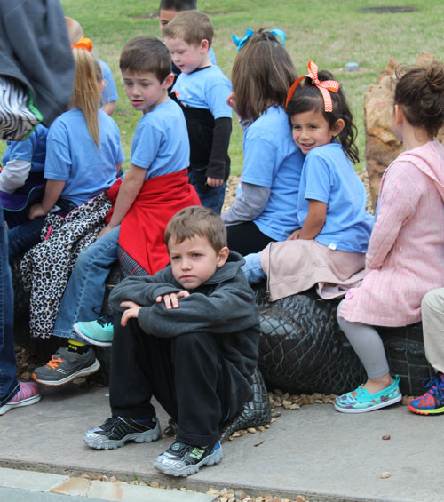 |
| The kids arrive, and poor Brodie doesn't feel good. | |
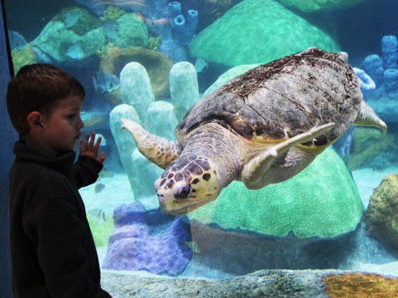 |
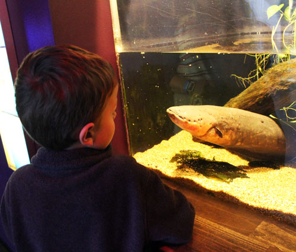 |
| Checking out the giant sea turtles | Staring down the eel |
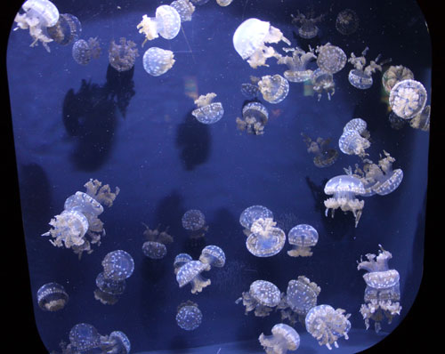 Cool jellyfish |
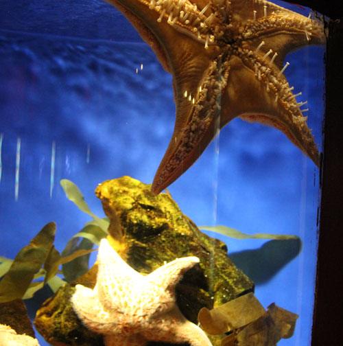 |
| Starfish belly | |
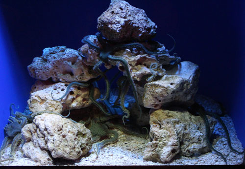 |
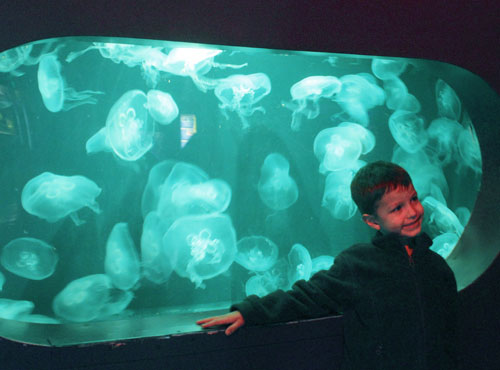 |
| All you could see in this tank were tentacles everywhere. It was creepy in person. | Brodie, putting on his game face for the camera |
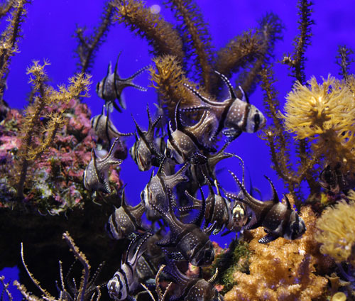 |
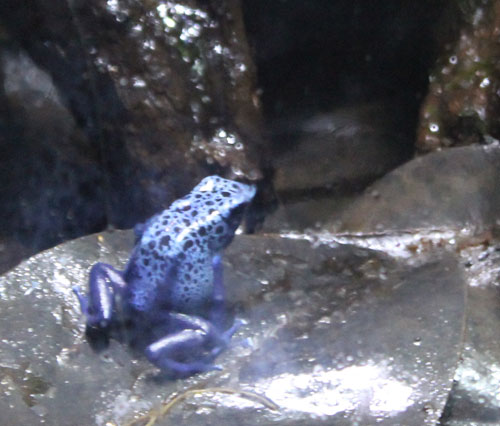 |
| Pretty fish | Blue frog (please don't be intimidated by all my technical descriptions here.) |
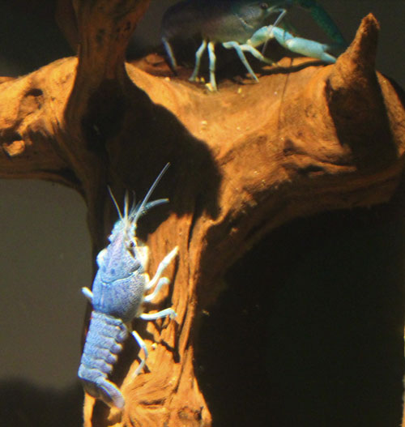 |
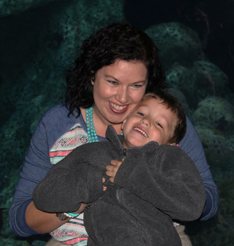 |
| Blue crawdads | Here his Mom finally gets a real smile out of him. |
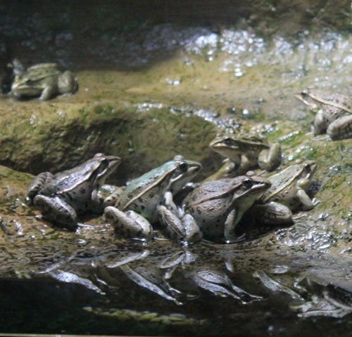 Frog conga line |
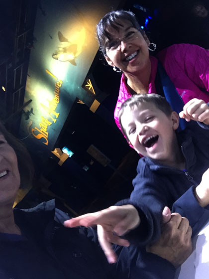 |
| We get a laugh out of him while we feed the catfish | |
| His teacher shared this picture of him on the bus trip home, he was worn
out. Thankfully, he was 100% better the next day. |
|